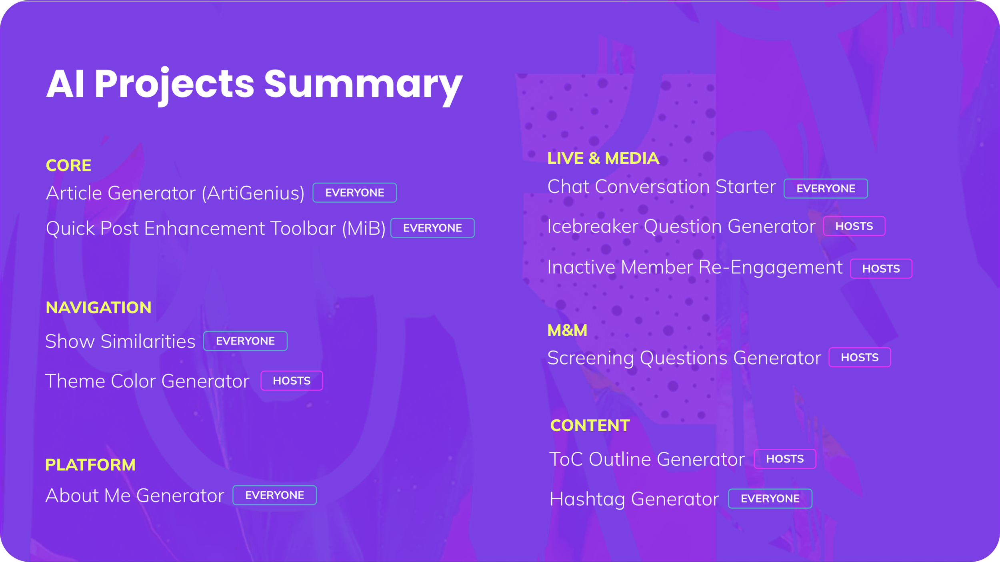
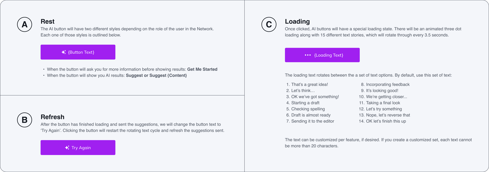

The Problem
"With AI setting new consumer expectations, we needed to raise the bar for the services we provided at Mighty to show we were on the leading edge."
The challenge involved three key objectives:
- Be radically more helpful to our Hosts and members by incorporating AI into the core of our platform.
- Maintain our position as a leader in tech innovation. The timeline was tight — if we didn't move quickly, someone else would.
- Learn to work with the technology. With AI advancing rapidly, it was crucial to dive in and start experimenting.
All of that being said, we already had a full roadmap of critical projects for the year, leaving us wondering where we could possibly fit in this brand new set of work.
The Solution
The approach used a two-week company-wide hackathon with strategic benefits:
- It allowed us to integrate AI into our product workflows quickly and organically.
- The hackathon format demonstrated how fast and agile our teams could be.
- Our squads were already adept at delivering meaningful results, so this was an opportunity to adapt under pressure.
Hackathon Criteria
- Features must help Hosts or members.
- AI-powered tools, not chatbots.
- No popularity contests.
- Attach to an AI identity.
Product Design Team Responsibilities
- Learning prompt engineering to optimize user interaction with AI features.
- Creating a clear visual language to distinguish AI-powered elements and ensuring consistency.
- Consulting across every hack team to help define use cases and create visuals.
How Did It Go?
The hackathon moved quickly over the course of two weeks. We began with a brainstorming phase that generated over 50 ideas.
- Squads sponsored the projects they were passionate about, working on 22 hacks.
- After intense collaboration, we selected 11 projects to move forward into production.
- We were ultimately able to release them all over the course of the next couple of weeks.
Visual Language
The design team created AI features that felt:
Alive
"One of our product principles at Mighty is that a Network should always feel alive with activity, and AI should be no exception to that."
Approachable
"While people in the tech industry are all super familiar with AI and its benefits, our user base is extremely broad, and often includes those who are not as technically savvy."
Contained
"As much as our AI features needed to blend into the rest of the Network, we also wanted to be clear about what was making use of AI and what wasn't."
Below is an example of a spec created for the buttons, which addresses all of these areas.

"As with every project at a fast moving startup, especially during a hackathon, you'll notice that even with these guidelines our visual language is not as consistent as we'd like."
Favorite AI Features
Show Similarities and Conversation Starter
Found on member profiles, this feature suggests commonalities between users based on engagement, location, bios, and more, and uses those commonalities to generate conversation starters.
These features speak to one of the core principals at Mighty — People Magic. In this instance, AI helped us find ways to alleviate some of the awkward moments one encounters when trying to connect with someone new.
Suggested Hashtags
This feature appears in Quick Posts and Articles, providing hashtag suggestions where none exist, marked by a sparkle icon.
Removing the work of deciding what hashtag to add to a post makes it feel less onerous and therefore more likely for people to use them.
Inactive Member Re-Engagement
In this instance, AI helped us meet a longstanding Host ask in our platform more quickly than would have otherwise been possible.
With this feature, Hosts can identify who in their Network is considered to be "inactive," and quickly reach out to try and re-engage them.
Conclusion
Skills Gained
- Rapid demos and prototypes — culturally this was not a skill we were particularly good at practicing.
- AI as a product tool — because we made such a big deal about AI early on, it gave permission to our product team to think of other ways we could incorporate AI.
Learnings and Adjustments
- Ability to toggle AI features — some Hosts were particularly skeptical about the use of AI in the product.
- Feedback mechanisms — while we acknowledged the risks of this decision ahead of time, we released our suite of AI features without any in-product feedback mechanisms.
- Mighty Co-Host — as a B2B2C business, we serve two sets of users: Hosts and members. We decided to call our AI "Mighty Co-Host," which ultimately ended up causing quite a bit of confusion.
In the end, this was one of our most successful hackathons ever at Mighty. And while not every feature we built was the most innovative or unique, we were able to meet our goals of accelerating AI adoption, proving the strength of our teams to quickly deliver impactful innovations under pressure, and embrace the wild world that is modern technology.